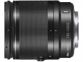

采用19片12组的镜头结构，内置3片非球面镜片和2片ED镜片。镜筒采用金属制造，等效焦距为27-270mm，内置减震（VR）功能。
一镜天下的首选，成像质量与电动10-100不相仲伯，但是小巧很多，对焦速度不错，可以发挥出nikon 1系的优势，光圈偏小，对于追求背景虚化有些乏力，不过家庭拍照和旅行拍摄很实用！
1、全焦段成像质量不错，满足基本需求 2、焦外成像较好 3、做工扎实 4、对焦速度不错，可以发挥出1系的优势 5、对焦距离适中，满足全方位拍摄
1、郊外成像有轻微二线性成像 2、变焦阻尼不顺滑 3、远端成像和边缘成像质量一般，下降趋势明显 4、镜头片长，内闪拍摄时，广角端会有遮挡光线问题